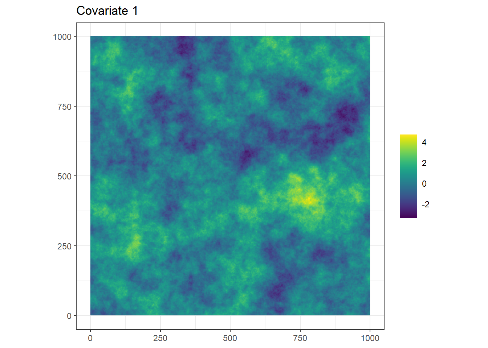
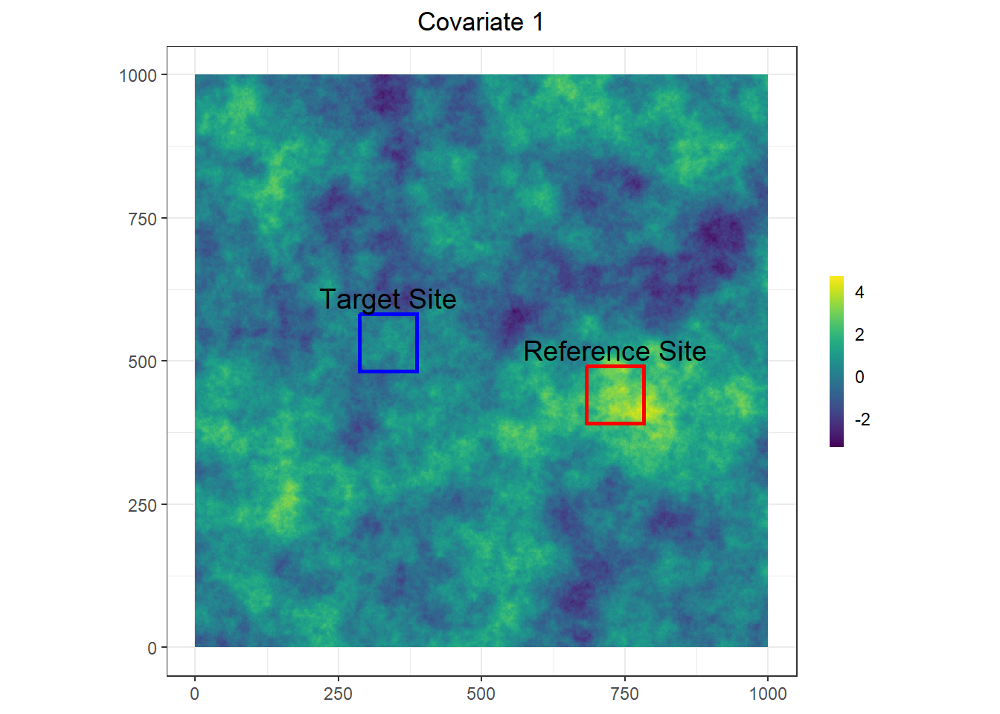
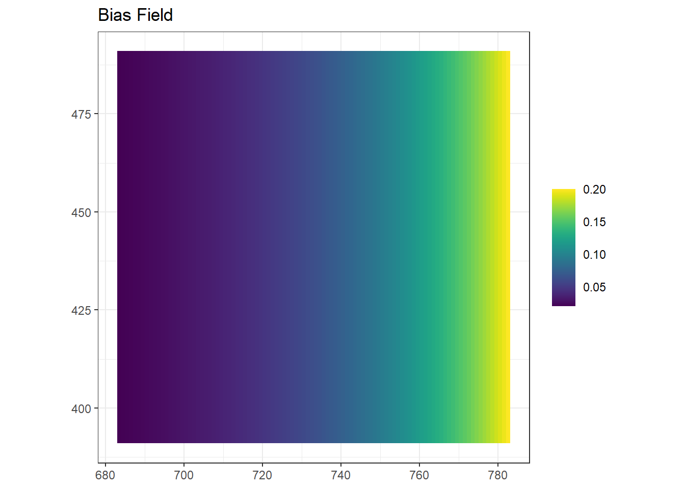
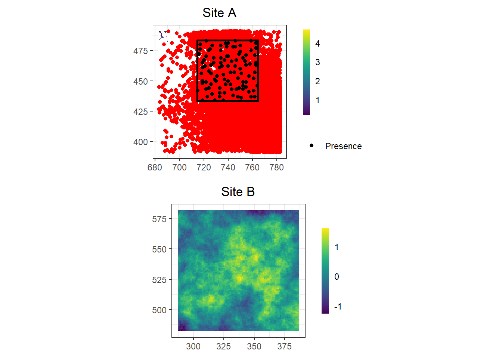

The following objects are masked from 'package:stats':
filter, lag
The following objects are masked from 'package:base':
intersect, setdiff, setequal, union
library(terra)
terra 1.7.78
library(purrr)library(RISDM)library(viridis)
Loading required package: viridisLite
library(spatstat)
Loading required package: spatstat.data
Loading required package: spatstat.geom
spatstat.geom 3.2-9
Attaching package: 'spatstat.geom'
The following objects are masked from 'package:terra':
area, delaunay, is.empty, rescale, rotate, shift, where.max,
where.min
Loading required package: spatstat.random
spatstat.random 3.2-3
Loading required package: spatstat.explore
Loading required package: nlme
Attaching package: 'nlme'
The following object is masked from 'package:dplyr':
collapse
spatstat.explore 3.2-7
Loading required package: spatstat.model
Loading required package: rpart
spatstat.model 3.2-11
Loading required package: spatstat.linnet
spatstat.linnet 3.1-5
spatstat 3.0-8
For an introduction to spatstat, type 'beginner'
library(ggpubr)
Attaching package: 'ggpubr'
The following objects are masked from 'package:spatstat.geom':
border, rotate
The following object is masked from 'package:terra':
rotate
Domain setup
# DOMAIN SETUP ------------------------------------------------------------# START with set up of resolution and north/east step length for later Site A and B grid creation.# Set ncolncol <-1000nrow <-1000res <-1# Create a bounded domain on [0, 10] x [0, 10]east_min <-0east_max <-1000north_min <-0north_max <-1000# We generate the grid resolution from min, max dimensions and the number of pixels# Set number of pixels (100 x 100)n_bau_east <- ncoln_bau_north <- nrow# so now we have n_bau_est x n_bau_north grid cells# Obtain the cell resolutionbau_east_step <- (east_max - east_min) / n_bau_eastbau_north_step <- (north_max - north_min) / n_bau_north # Generate grid centroid coordinates# We do this so that our centroid begins in the centre of a cell (hence, bau_east_step/2))eastings <-seq(east_min + bau_east_step/2, east_max - bau_east_step/2, by = bau_east_step)northings <-seq(north_min + bau_north_step/2, north_max - bau_north_step/2, by = bau_north_step)coords <-as.matrix(expand.grid(eastings, northings))colnames(coords) <-c("eastings", "northings")# Run setup for replicates ------------------------------------------------variance <-0.5# Variance of the Gaussian field at distance zero (changed from 0.5)scal <-20# Range of the Gaussian field # Size of the two Reference and Target sitesrast_cellsA <-c(100, 100)rast_cellsB <-c(100,100)# Number of replicates per rangenreps <-3
crs(landscape.rast) <-"epsg:3857"# Setting to WGS 84 / Pseudo-Mercator projection for later functions requiring cell sizexSeq <- terra::xFromCol(landscape.rast)ySeq <- terra::yFromRow(landscape.rast)# Simulate a covariatecov1 <- RISDM:::fftGPsim2( x=xSeq, y=ySeq, sig2 =1 , rho =100, nu =1/2) %>%rast()crs(cov1) <-"epsg:3857"# Setting to WGS 84 / Pseudo-Mercator projection for later functions requiring cell sizenames(cov1) <-"cov"# Get coords of original rastercoords <-xyFromCell(cov1, 1:ncell(cov1))# Convert raster to matrix objectcov1.df <-as.data.frame(cov1, xy = T)cov1.mat <-as.matrix(cov1.df)colnames(cov1.df) <-c("x", "y", "cov")colnames(cov1.mat) <-c("x", "y", "cov")cov1 %>%as.data.frame(xy = T) %>%ggplot() +geom_tile(aes(x = x, y = y, fill = cov)) +scale_fill_viridis() +coord_fixed() +theme_bw() +theme(axis.title.x =element_blank(),axis.title.y =element_blank(),legend.ticks =element_blank(),legend.title =element_blank()) +ggtitle('Covariate 1')

2. Simulate latent distribution
beta0 <--3# Interceptbeta1 <-2# Coefficient for cov 1# beta2 <- 0.1 # Coefficient for cov 2scal <-20# Scale parameter (range of spatial effect)variance <-0.5# Variance of the Gaussian field at distance zero (changed from 0.5)nu <-1/2# Smoothness parameter for Matern covariance function# Print the expected mean intensity (assuming mean of covariate is 0)exp(beta0 + beta1*(0))
[1] 0.04978707
fe <- beta0 + beta1*cov1.mat[, "cov"] mu <- cov1.df %>%mutate(cov = fe)mu <- spatstat.geom::as.im(mu)# Create IPP with environmental covariateipp <-rpoispp(exp(mu))spp_process <-cbind(x = ipp$x, y = ipp$y)
3. Choose Reference and Target sites
# Set size of grid (number of cells) for Site A (Reference)# NOTE - must be smaller than total cell number in x y directionsrast_sizeA <-c(rast_cellsA[1]*bau_east_step, rast_cellsA[2]*bau_north_step)# Set size of grid (number of cells) for Site B (Target)rast_sizeB <-c(rast_cellsB[1]*bau_east_step, rast_cellsB[2]*bau_north_step)# Get coords of overall grid domain boundaryxmin <-min(eastings)xmax <-max(eastings)ymin <-min(northings)ymax <-max(northings)# Set the limit for x and y coord so box is completely inside the domainrand.limA <-c(xmax - rast_sizeA[1], ymax - rast_sizeA[2])rand.limB <-c(xmax - rast_sizeB[1], ymax - rast_sizeB[2])##### GRID A ###### xmin.randA <- eastings[which.min(abs(eastings -runif(1, min =round(xmin,2), max =round(rand.limA[1],2))))] xmax.randA <- xmin.randA + rast_sizeA[1]xmin.randA <- xmin.randA - bau_east_step/2xmax.randA <- xmax.randA + bau_east_step/2- bau_east_stepymin.randA <- northings[which.min(abs(northings -runif(1, min =round(ymin,2), max =round(rand.limA[2],2))))]ymax.randA <- ymin.randA + rast_sizeA[2]ymin.randA <- ymin.randA - bau_north_step/2ymax.randA <- ymax.randA + bau_north_step/2- bau_east_step#### GRID B ########Generate_Grid_B <-function() { xmin.randB <<- eastings[which.min(abs(eastings - (runif(1, min =round(xmin,2), max =round(rand.limB[1],2)))))] xmax.randB <<- xmin.randB + rast_sizeB[1] xmin.randB <<- xmin.randB - bau_east_step/2 xmax.randB <<- xmax.randB + bau_east_step/2- bau_east_step ymin.randB <<- northings[which.min(abs(northings - (runif(1, min =round(ymin,2), max =round(rand.limB[2],2)))))] ymax.randB <<- ymin.randB + rast_sizeB[2] ymin.randB <<- ymin.randB - bau_north_step/2 ymax.randB <<- ymax.randB + bau_north_step/2- bau_east_step}# Run function to generate GRID BGenerate_Grid_B()# Must be checked to see if overlaps with GRID A # If overlap occurs, run the generate function againwhile(xmin.randB < xmax.randA & xmax.randB > xmin.randA & ymin.randB < ymax.randA & ymax.randB > ymin.randA) {Generate_Grid_B()} ### Make the grids into rastersrand.gridA <-rast(xmin = xmin.randA, xmax = xmax.randA, ymin = ymin.randA, ymax = ymax.randA, nrows = rast_cellsA[1], ncols = rast_cellsA[2],vals =1:rast_cellsA[2]) # Just setting values for plotting and for converting to a dataframe
Warning: [setValues] values were recycled
crs(rand.gridA) <-"epsg:3857"rand.gridB <-rast(xmin = xmin.randB, xmax = xmax.randB, ymin = ymin.randB, ymax = ymax.randB, nrows = rast_cellsB[1], ncols = rast_cellsB[2],vals =1:rast_cellsB[2]) # Just setting values for plotting and for converting to a dataframe
Warning: [setValues] values were recycled
crs(rand.gridB) <-"epsg:3857"## PLOT# Extract the extentsextA <-ext(rand.gridA)extB <-ext(rand.gridB)df_extA <-data.frame(xmin = extA[1],xmax = extA[2],ymin = extA[3],ymax = extA[4],color ="red",label ="Reference Site",label_x = (extA[1] + extA[2]) /2, # Center of the extent for text placementlabel_y = extA[4] + (extA[4] - extA[3]) *0.1# Slightly above the top of the extent)df_extB <-data.frame(xmin = extB[1],xmax = extB[2],ymin = extB[3],ymax = extB[4],color ="blue",label ="Target Site",label_x = (extB[1] + extB[2]) /2, # Center of the extent for text placementlabel_y = extB[4] + (extB[4] - extB[3]) *0.1# Slightly above the top of the extent)# Combine the extents into one data framedf_extents <-rbind(df_extA, df_extB)# Create ggplotcov1 %>%as.data.frame(xy =TRUE) %>%ggplot() +geom_tile(aes(x = x, y = y, fill = cov)) +scale_fill_viridis(guide =guide_colorbar(barwidth =0.5)) +coord_fixed() +theme_bw() +theme(axis.title.x =element_blank(),axis.title.y =element_blank(),legend.ticks =element_blank(),legend.title =element_blank(),plot.title =element_text(hjust =0.5)) +geom_rect(data = df_extents, aes(xmin = xmin, xmax = xmax, ymin = ymin, ymax = ymax, color = color), fill =NA, linetype ="solid", linewidth =1) +scale_color_identity() +geom_text(data = df_extents, aes(x = label_x, y = label_y, label = label), color ="black", size =5, vjust =0) +ggtitle('Covariate 1')

4. PO sampling
*Note that the below bias field applies only within the Reference Site.
# Trim po to only include points in Site Aspp_process.rand.gridA <- spp_process[ spp_process[,1] >=xmin(ext(rand.gridA)) & spp_process[,1] <=xmax(ext(rand.gridA)) & spp_process[,2] >=ymin(ext(rand.gridA)) & spp_process[,2] <=ymax(ext(rand.gridA)), ]maxprob <-0.2# Thin the process by the bias fieldminprob <- maxprob/10probseq <-exp(seq(log(minprob), log(maxprob), length.out = rast_cellsA[1]))# Generate a matrix of continuous values from minprob to maxprob, going left to rightbias_matrix <-matrix(rep(probseq, each = rast_cellsA[1]), nrow = rast_cellsA[1], ncol = rast_cellsA[2], byrow =TRUE)# Flatten the matrix into a vector to match the expected input format for 'vals'bias_vals <-as.vector(bias_matrix)bias <-rast(nrows = rast_cellsA[1],ncols = rast_cellsA[2],xmin =xmin(rand.gridA),xmax =xmax(rand.gridA),ymin =ymin(rand.gridA),ymax =ymax(rand.gridA),resolution = res,vals = bias_vals,names =c("bias"))crs(bias) <-"epsg:3857"# Setting to WGS 84 / Pseudo-Mercator projection for later functions requiring cell sizenames(bias) <-"bias"# Plot bias fieldbias %>%as.data.frame(xy = T) %>%ggplot() +geom_tile(aes(x = x, y = y, fill = bias)) +scale_fill_viridis() +coord_fixed() +theme_bw() +theme(axis.title.x =element_blank(),axis.title.y =element_blank(),legend.ticks =element_blank(),legend.title =element_blank()) +ggtitle('Bias Field')

# Add spatial bias info to PP datapo.rand.gridA <-cbind(spp_process.rand.gridA, bias = terra::extract(bias, spp_process.rand.gridA[,1:2]))# Thin the process by the bias fieldpo.rand.gridA <-cbind(po.rand.gridA, presence =rbinom(nrow(po.rand.gridA), 1, po.rand.gridA[, "bias"]))po.rand.gridA <- po.rand.gridA[po.rand.gridA$presence ==1, ]# Turn back into a matrixpo.rand.gridA <-as.matrix(po.rand.gridA)# Trim to just xypo.rand.gridA <- po.rand.gridA[, c("x", "y")]
5. PA sampling
# Set size of grid (number of cells) for PA grid in Site A (Reference)# NOTE - must be smaller than total cell number in x y directionsrast_cellsA <-c(50, 50)rast_sizeA <-c(rast_cellsA[1]*res(rand.gridA)[1], rast_cellsA[2]*res(rand.gridA)[2])# Get coords of overall grid domain boundaryxmin <-xmin(rand.gridA)xmax <-xmax(rand.gridA)ymin <-ymin(rand.gridA)ymax <-ymax(rand.gridA)eastingsSITE <-crds(rand.gridA)[,1]northingsSITE <-crds(rand.gridA)[,2]# Set the limit for x and y coord so box is completely inside the domainrand.limA <-c(xmax - rast_sizeA[1], ymax - rast_sizeA[2])xmin.randA <- eastingsSITE[which.min(abs(eastingsSITE -runif(1, min =round(xmin,2), max =round(rand.limA[1],2))))]ymin.randA <- northingsSITE[which.min(abs(northingsSITE -runif(1, min =round(ymin,2), max =round(rand.limA[2],2))))]xmax.randA <- eastingsSITE[which.min(abs(eastingsSITE - (xmin.randA + rast_sizeA[1])))]ymax.randA <- northingsSITE[which.min(abs(northingsSITE - (ymin.randA + rast_sizeA[2])))]PA.rand.gridA <-rast(xmin = xmin.randA, xmax = xmax.randA, ymin = ymin.randA, ymax = ymax.randA, nrows = rast_cellsA[1], ncols = rast_cellsA[2],vals =1:rast_cellsA[2]) # Just setting values for plotting and for converting to a dataframe
Warning: [setValues] values were recycled
crs(PA.rand.gridA) <-"epsg:3857"# SAMPLING PA DATA FROM RANDOM GRID A# Get the domain of region adom_a_bbox <-c(east_min =xmin(PA.rand.gridA), east_max =xmax(PA.rand.gridA), north_min =ymin(PA.rand.gridA), north_max =ymax(PA.rand.gridA))# Choose a grid size number of rows (for PA sampling)PA_a_res <-10dom_a_resE <- (dom_a_bbox["east_max"] - dom_a_bbox["east_min"]) / PA_a_resdom_a_resN <- (dom_a_bbox["north_max"] - dom_a_bbox["north_min"]) / PA_a_res# Set centroids of PA sampling gridseast_seq <-seq(dom_a_bbox["east_min"] + dom_a_resE/2, dom_a_bbox["east_max"] - dom_a_resE/2, by = dom_a_resE)north_seq <-seq(dom_a_bbox["north_min"] + dom_a_resN/2, dom_a_bbox["north_max"] - dom_a_resN/2, by = dom_a_resN)# Create a blank PA dataset at Site A (all zeros), located on grids cells defined by random grid domain and our PA sampling grid sizegrid_a <-expand.grid(east_seq, north_seq)pa_a <-cbind(grid_a, 0)colnames(pa_a) <-c("x", "y", "presence")pa_a <- terra::rast(pa_a)# Random stratified sampling ----------------------------------------------# Create a reference grid for the 10x10 raster to identify each cell with a unique numberref_grid <- pa_avalues(ref_grid) <-1:ncell(ref_grid) # Assign unique values (1 to 100) to each cell# Resample the reference grid to the resolution of the 50x30 raster# This doesn't change the resolution of the 50x30 raster but assigns the corresponding values from the 10x10 cellsalignment_layer <-resample(ref_grid, PA.rand.gridA, method="near")names(alignment_layer) <-"strata"# Assign strata to PA.rand.grid.A cellsPA.Strata <-c(PA.rand.gridA, alignment_layer)# Create a third layer in PA.Strata to store quadratsquadrats_layer <- PA.rand.gridAvalues(quadrats_layer) <-NA# Initialize with NA# Loop through each unique stratumfor (i inunique(values(PA.Strata$strata))) {# Find cells in PA.Strata that belong to the current stratum strata_cells <-which(values(PA.Strata$strata) == i)# Randomly sample two cells from the strata selected_cells <-sample(strata_cells, 1, replace =FALSE)# Assign a unique value to the selected cells (e.g., i or 1 for selected)values(quadrats_layer)[selected_cells] <-1}# Add quadrats layer to PA.StrataPA.Strata <-c(PA.Strata, quadrats_layer)names(PA.Strata)[nlyr(PA.Strata)] <-"quadrats"# Change spp_process to a spatvector for extractspp_process.rand.gridA.vect <-vect(spp_process.rand.gridA)match <- terra::extract(PA.Strata, spp_process.rand.gridA.vect) %>%filter(quadrats ==1)# Set strata without presence to NA & update others to 1values(PA.Strata$strata)[!values(PA.Strata$strata) %in% match$strata] <-NAvalues(PA.Strata$strata)[values(PA.Strata$strata) >1] <-1# Mask the quadrats that have presence by saying, where strata == NA, quadrats stay as 1, otherwise set to 0temp <-mask(PA.Strata[["quadrats"]], PA.Strata[["strata"]], maskvalue =NA, updatevalue =0)po_a <-mask(temp, PA.Strata[["quadrats"]], maskvalue =NA, updatevalue =NA)names(po_a) <-"presence"pa_a_df <-as.data.frame(po_a, xy = T)# pa - region apa_a_df <- pa_a_df %>%mutate(area =1)
6. Plot PO / PA data at Reference site
White dots are latent species process before thinning with bias field. Red are points after thinning with bias field. Black square is the PA grid.
# 6. Plot PO and PA data at Reference site --------------------------------cov.SiteA <-crop(cov1, ext(rand.gridA))cov.SiteB <-crop(cov1, ext(rand.gridB))# Get extent for plottingextPA <-ext(PA.rand.gridA) df_extPA <-data.frame(xmin = extPA[1],xmax = extPA[2],ymin = extPA[3],ymax = extPA[4],color ="black",label ="PA Grid",label_x = (extPA[1] + extPA[2]) /2, # Center of the extent for text placementlabel_y = extPA[4] + (extPA[4] - extPA[3]) *0.1# Slightly above the top of the extent)# Plot PO data on grid A and BA <- cov.SiteA %>%as.data.frame(xy = T) %>%ggplot() +geom_tile(aes(x = x, y = y, fill = cov)) +scale_fill_viridis(guide =guide_colorbar(barwidth =0.5)) +coord_fixed() +geom_point(data = spp_process.rand.gridA, aes(x = x, y = y), color ="white", size =1.5) +geom_point(data = po.rand.gridA, aes(x = x, y = y), color ="red", size =1.5) +geom_rect(data = df_extPA, aes(xmin = xmin, xmax = xmax, ymin = ymin, ymax = ymax, color = color), fill =NA, linetype ="solid", linewidth =1) +geom_point(data = pa_a_df, aes(x=x, y=y, shape =factor(presence, levels =c(1,0))), size =1.5) +scale_shape_manual(values =c("0"=4, "1"=16),label =c("0"="Absence", "1"="Presence")) +scale_color_identity() +theme_bw() +theme(axis.title.x =element_blank(),axis.title.y =element_blank(),legend.ticks =element_blank(),legend.title =element_blank(),plot.margin =unit(c(0.5, 0.1, 0.5, 0.1), "lines"),plot.title =element_text(hjust =0.5)) +# Reduce marginsggtitle('Site A')B <- cov.SiteB %>%as.data.frame(xy = T) %>%ggplot() +geom_tile(aes(x = x, y = y, fill = cov)) +scale_fill_viridis(guide =guide_colorbar(barwidth =0.5)) +coord_fixed() +theme_bw() +theme(axis.title.x =element_blank(),axis.title.y =element_blank(),legend.ticks =element_blank(),legend.title =element_blank(),plot.margin =unit(c(0.5, 0.1, 0.5, 0.1), "lines"),plot.title =element_text(hjust =0.5)) +# Reduce marginsggtitle('Site B')ggarrange(A, B, ncol =1, nrow =2)

7. Run models
# Set model control parametersprior.mean <-0int.sd <-1000# Intercept standard deviationother.sd <-10# Covariate effect standard deviationprior.range <-c(10, 0.1) # Prior chance 10% that parameter falls below range of 1kmprior.space.sigma <-c(5, 0.1) # Prior chance 10% that parameter falls above SD of 5# Set mesh parametersmax.n <-c(5000, 2500) # Default c(500,200)dep.range <-NULL# In raster projection units, default is 1/3 diagonal length of raster extentexpans.mult <-1.5# Default, 1.5 x dep.range max.edge <-NULL# Default c(0.2, 0.5)*dep.range cutoff <-NULL# Default 0.2*max.edge1 offset <-NULL# Default is dep.range doPlot <-FALSE# Set the distribution formula for the modeldistributionFormula <-~0+ covmy.control <-list(coord.names =c("x", "y"),prior.mean = prior.mean,int.sd = int.sd, # Intercept standard deviationother.sd = other.sd, # Covariate effect standard deviationprior.range = prior.range, # Prior chance 10% that parameter falls below range of 1kmprior.space.sigma = prior.space.sigma, # Prior chance 10% that parameter falls above SD of 5addRandom =FALSE, # No random effectstandardiseCovariates =FALSE) # Load PA/PO occurrence data -------------------------------------------------PA_fit <- pa_a_dfPO <- po.rand.gridAnames(PO) <-c("x", "y")# Load covariates ---------------------------------------------------------covs.SiteA.rast <-crop(cov1, ext(rand.gridA))cov.rep <- covs.SiteA.rast# Add bias covariate to covariate stackBias.rast <- biascov.rep <-c(cov.rep, Bias.rast)mesh.default <-makeMesh(cov.rep,max.n = max.n, # Default c(500,200)dep.range = dep.range, # In raster projection units, default is 1/3 diagonal length of raster extentexpans.mult = expans.mult, # Default, 1.5 x dep.rangemax.edge = max.edge, # Default c(0.2, 0.5)*dep.rangecutoff = cutoff, # Default 0.2*max.edge1offset = offset, # Default is dep.rangedoPlot = doPlot)
No range of dependence specified (dep.range argument). Assuming that this range is 1/5 of the extent of the raster. Maybe(?) this isn't a good value. Please check.
No max.edge given. Assuming that the inner max.edge is 1/5 of spatial dependence range (dep.range argument) and outer max.edge is 1/2 spatial dependence range.
No cutoff given. Assuming that points less than min( max.edge) / 5 are considered to be the same.
No offset given. Assuming that the outer domain is approximately an expansion of the inner domain by the amount of a spatial dependence range.
#### Models without bias covariatem.int <-isdm(observationList =list(POdat = PO,PAdat = PA_fit),covars = cov.rep,mesh = mesh.default,responseNames =c(PO =NULL, PA ="presence"),sampleAreaNames =c(PO =NULL, PA ="area"),distributionFormula = distributionFormula,biasFormula =~1, # Intercept onlyartefactFormulas =list(PA =~1), # Intercept onlycontrol = my.control)m.PO <-isdm(observationList =list(POdat = PO), covars = cov.rep,mesh = mesh.default,responseNames =NULL,sampleAreaNames =NULL,distributionFormula = distributionFormula, # Linear w one covbiasFormula =~1, # Intercept onlyartefactFormulas =NULL,control = my.control)#### Models with bias covariatem.int.bias <-isdm(observationList =list(POdat = PO,PAdat = PA_fit),covars = cov.rep,mesh = mesh.default,responseNames =c(PO =NULL, PA ="presence"),sampleAreaNames =c(PO =NULL, PA ="area"),distributionFormula = distributionFormula,biasFormula =~1+ bias, artefactFormulas =list(PA =~1), # Intercept onlycontrol = my.control)m.PO.bias <-isdm(observationList =list(POdat = PO), covars = cov.rep,mesh = mesh.default,responseNames =NULL,sampleAreaNames =NULL,distributionFormula = distributionFormula, # Linear w one covbiasFormula =~1+ bias, artefactFormulas =NULL,control = my.control)
Look at model summaries
Integrated and PO have almost identical coefficients with and without bias covariate. Also I don’t understand why the bias coefficient estimate is so high.